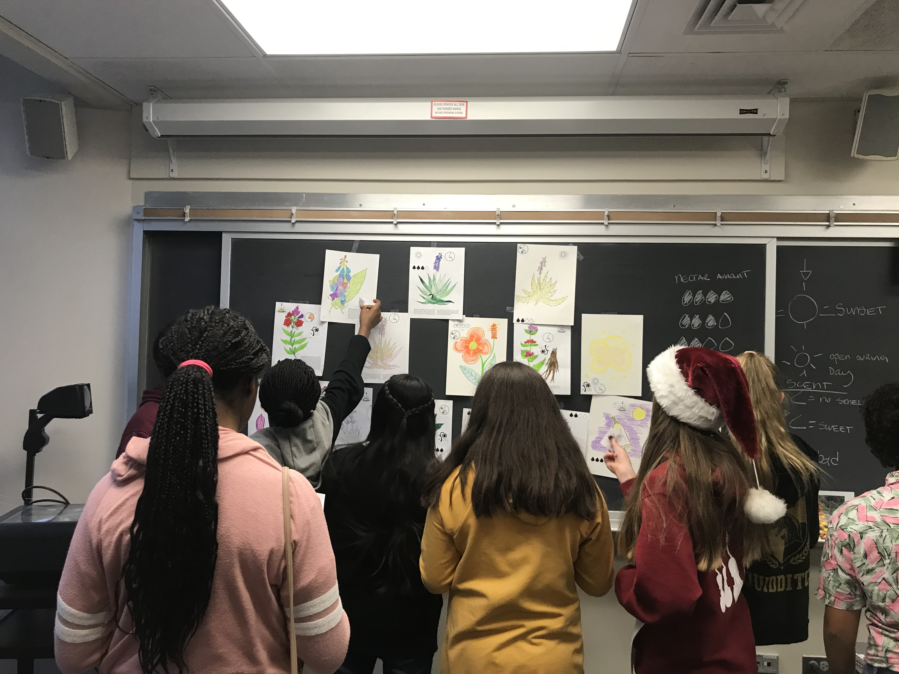
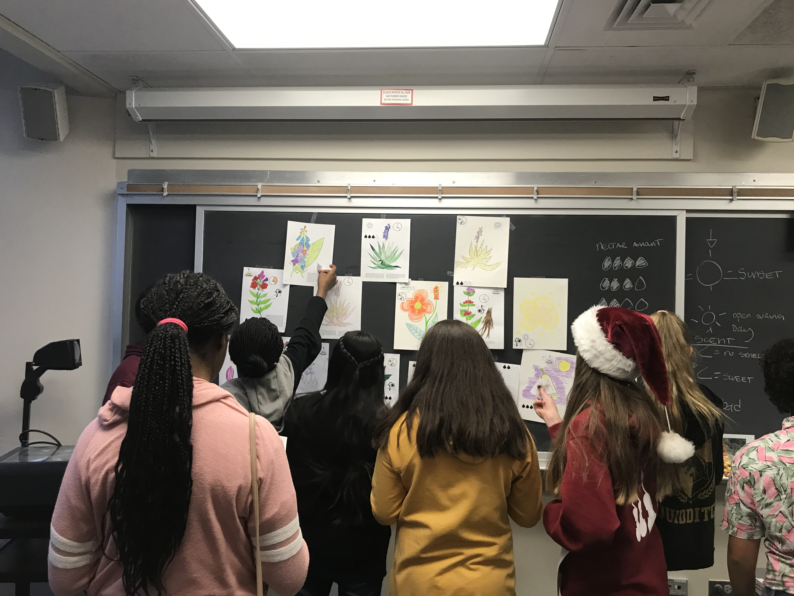

I think science should be accessible, fun, informative and engaging for as many people as possible. To that end, I try to be involved with groups and efforts bringing real science content to the world outside of the lab. This page highlights some of those efforts, and also some of the inspiring outreach done by people close to me.
Skype a Scientist matches scientists with classrooms around the world to bring real scientists into the classroom. In these unusual times, they've broadened their efforts and are also matching scientists with households as many students are now learning from home. If you'd like to chat about floral diversity, floral scent, pollinators, or just what it's like to study plant biology or ecology and evolution, look me up! I'm always happy to share my science.

The Chicago Botanic Garden hosts a yearly Science Festival. This year I will have a booth at the Science After Hours event that Friday night (April 17th) exploring how floral traits affect mating between plants. Learn the complicated dynamics of plant sex and enjoy fancy cocktails!
 


Fellow graduate students Anita @AnitaCisternasF, Katie, and I gave a workshop on pollination to groups of middle school students with Expanding Your Horizons Chicago. EYH holds symposia dedicated to providing middle school girls with exciting experiences in STEM and illuminating the diversity of STEM careers. It was so much fun to see the flower designs these girls came up with!

My advisor had the amazing opportunity to travel to Antartica with Homeward Bound in an effort to raise visibility of women in STEMM. Learn more about that amazing trip here.

The best way to learn about the principles of buoyancy is on the water! While my passion for sailing usually exists outside of my scientific life, I've had the pleasure to help teach the Chicago Yacht Club's Adventure Boating Program which brings STEM concepts into outdoor eduction. The program covers topics such as the dynamics of weather, climate, and wind that effect Lake Michigan, how the Lake provides the city of Chicago with clean drinking water, what sort of life exists within the Lake and along its shores, and how do boats work.